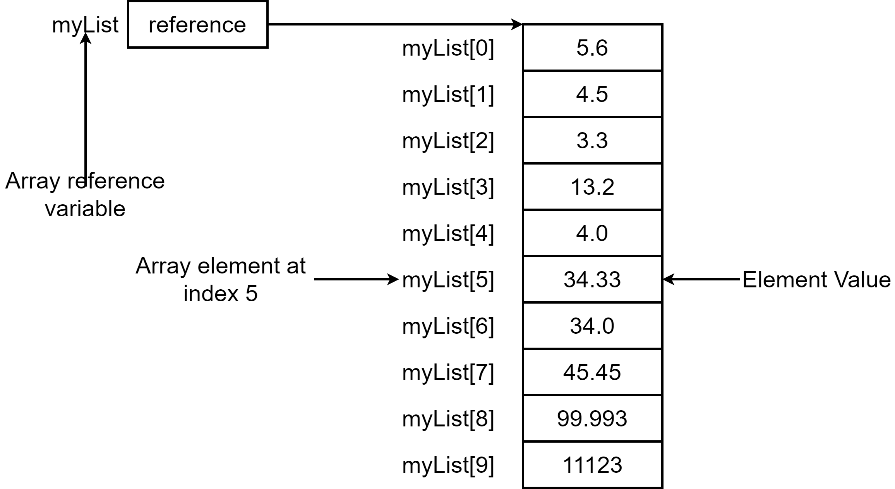
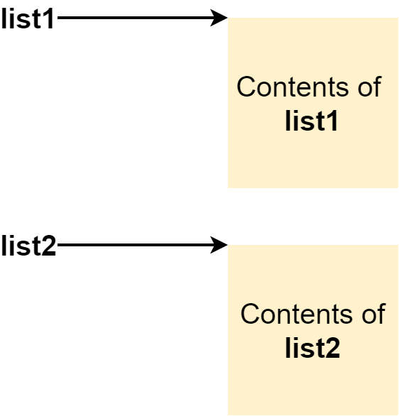

Java程序设计
第二章 Java语言基础(二)
为什么是数组
写一段程序，求班级所有同学某次测试成绩的平均分
/*
AverageScore: Display average score of class
*/
public class AverageScore{
public static void main( String[] args ){
int[] scores = new int[40];
for( int i = 0; i < 40; i++ ){
scores[i] = ( int )( Math.random() * 1000 ) % 40 + 60;
}
// int[] scores = new int[40]{ 91, 92, ..., 86, 87 };
int sum = 0;
for( int i = 0; i < 40; i++ ){
sum += scores[i];
}
double averageScore = sum * 1.0 / 40;
System.out.println( "The average score of class is " + averageScore );
}
}
数组是什么
- 数组
- 是有序的元素集合，包括基本数据类型、引用数据类型，或是对其它数组的引用
- 数组是对象，是扩展自类Object的对象，类Object中定义的方法都可用于数组对象，实现对数组中元素的操作
- 数组定义无需指明数组长度
数组是什么
声明数组
声明数组，即声明数组的类型，数组名
type arrayName[];
- char s[]; → char[] s;
- int intArray[]; → int[] intArray;
数组初始化值
- 静态初始化
int[] intArray = { 34, 28, 59, 89 };
int[] intArray = new int[]{ 34, 28, 59, 89 };
int[] intArray = new int[4];
int intArray[] = new int[4];
数组中元素的初始值是？如果是double, float, char, boolean 类型呢？
如下的使用可否？
int[] intArray;
intArray = { 44, 33, 22, 11 };
数组初始化内存管理

访问数组元素
数组下标从0到n-1
int[] arr = new int[5];
for( int i = 0; i < arr.length; i++ )
arr[ i ] = i;
数组操作示例1
public class ScoreTest1{
public static void main( String[] args ){
int[] score = new int[];
score[0] = 90;
score[1] = 92;
System.out.println( score[0] );
}
}
数组操作示例2
public class ScoreTest2{
public static void main( String[] args ){
int[] score = { 12, 32, 45, 48, 69 };
for( int i = 0; i < score.length; i++ ){
System.out.println( score[i] );
}
//for( int num:score )
//System.out.println(num);
}
}
数组操作示例3
public class ScoreTest3{
public static void main( String[] args ){
int[] score = new int[4];
score = { 45, 87, 69, 98, 80 };
int[] score2 = new int[]{ 60, 72, 90, 85, 100 };
int[] score3;
score3 = { 60, 80, 85, 79, 65 };
int[] score4 = score2;
int[] score3 = score2;
score3[1] = 79;
}
}
数组操作示例4
public class ScoreTest4{
public static void main( String[] args ){
int[] score = new int[3];
score[0] = 10;
System.out.println( score[1] );
}
}
数组使用基本方法
double[] myList = new double[10];
- 数组元素用输入值赋值
Scanner input = new Scanner( System.in );
System.out.print( "Enter " + myList.length + " elements: " );
for( int i = 0; i < myList.length; i++ )
myList[i] = input.nextDouble();
for(int i = 0; i < myList.length; i++ )
myList[i] = Math.random() * 100;
for(int i = 0; i < myList.length; i++ )
System.out.println( myList[i] + " " );
数组使用基本方法(2)
- 数组元素求和
double total = 0;
for( int i = 0; i < myList.length; i++ )
total += myList[i];
double max = myList[0];
for( int i = 1; i < myList.length; i++ )
if( myList[i] > max ) max = myList[i];
double max = myList[0];
int indexOfMax = 0;
for( int i = 1; i < myList.length; i++ ){}
if( myList[i] > max ){
max = myList[i];
indexOfMax = i;
}
}
数组使用基本方法(3)
- 数组元素随机变换位置
for(int i = 0; i < myList.length-1; i++ ){
int j = (int)(Math.random() * myList.length );
double temp = myList[i];
myList[i] = myList[j];
myList[j] = temp;
}
double temp = myList[0];
for(int i = 1; i < myList.length; i++ )
myList[i-1] = myList[i];
myList[myList.length-1]=temp;
Foreach
foreach循环是Java提供的一种循环的简单形式
for( double e: myList )
System.out.println( e );
foreach循环和普通的for循环功能实现上的区别在哪？
复制数组
int[] list1 = new int[10]; int list2 = new int[10];
执行list2=list1后，发生了什么？


如何正确复制数组元素
- 利用循环依次复制每一个元素
for(int i = 0; i < myList.length; i++ )
list2[i] = list1[i];
System.arraycopy(from, index, to, index, length)
System.arraycopy( list1, 0, list2, 0, list1.length );
数组作为方法参数
public class TestArrayArguments{
public static void main( String[] args ){
int x = 1;
int[] y = new int[10];
m( x, y );
System.out.println( "x is " + x );
System.out.println( "y[0] is " + y[0] );
}
public static void m( int number, int[] numbers ){
number = 1000;
numbers[0] = 5555;
}
}
思考，以上代码的输出是什么？
数组操作Arrays方法
java.util.Arrays类
| 主要的Arrays方法 | 方法描述 |
|---|---|
| static List asList[T[]) | 将一个数组转换为一个List |
| static int binarySearch(Object[],key) | 在数组中搜索特定元素，并返回其下标 |
| static boolean equals(Object[], Ojbect[]) | 比较两个数组，看它们所包含的元素是否都相同 |
| public static void sort(Object[]) | 对数组中的元素进行排序 |
| public static String toString(Object[]) | 创建一个字符串，使其包含数组内的所有元素 |
| static T[] copyOf(T[], length) | 复制数组，将指定长度的内容拷贝到新数组中 |
Arrays方法数组使用示例
import java.util.*;
public class ArrayTest{
public static void main( String[] args ){
int[] narray = { 38, 60, 19, 27, 70, 54 };
System.out.println( Arrays.toString( narray ) );
System.out.println( Arrays.binarySearch( narray, 27 ) );
int[] narray2 = Arrays.copyOf( narray, narray.length );
//int[] narray2 = narray;
System.out.println( narray2[ 5 ] + ", " + narray2.length );
System.out.println( Arrays.equals( narray, narray2 ));
System.out.println( narray.equals( narray2 ) );
Arrays.sort( narray );
System.out.println( Arrays.toString( narray ) );
//System.out.println( narray.toString() );
}
}
数组使用常见错误
- 数组初始化错误
int[] score = new int[4];
score = { 60, 70, 89, 90 };//两句合一句
int[] score = new int[4]{ 60, 70, 80, 90 };//一句分两句
int[] score = new int[]; score[0] = 37; score[1] = 45;
int[] score = new int[2]; score[1] = 54; score[2] = 77;
多维数组
- 多维数组
- 即数组的数组，数组中的每一个元素都是数组，常用的是二维数组，一般表示为int[][] myArray;
int[][] a1 = { {2,3}, {1,5}, {3,3} };
int[][] a = new int[][]{{2,3}, {1,5}, {3,3}};
int[][] a2 = new int[4][];
a2[0] = new int[3];
a2[1] = new int[2];
int[][] a3 = new int[4][5];
int[] a4[] = new int[2][];
int[] a5[] = new int[5][4];
int ea1[2][3];
int[][] ear2 = new int[][2];
int ear3[][4] = new int[3][4];